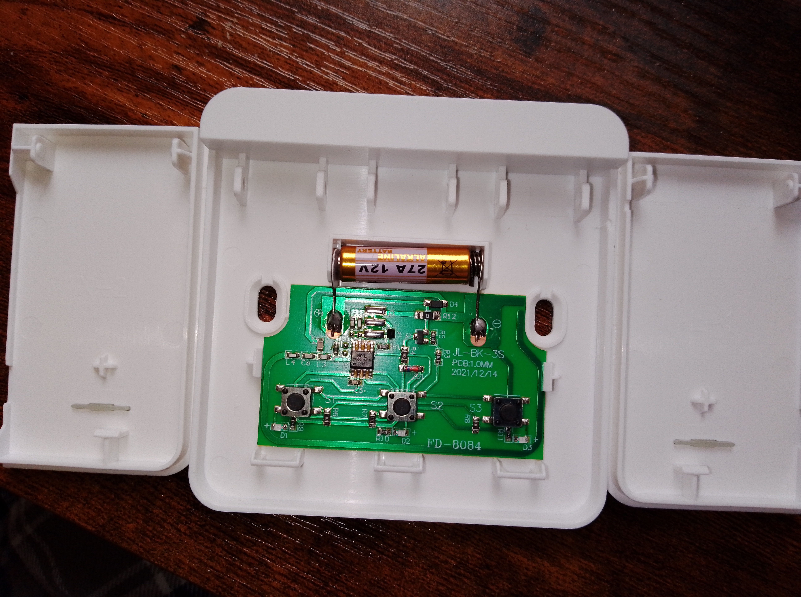
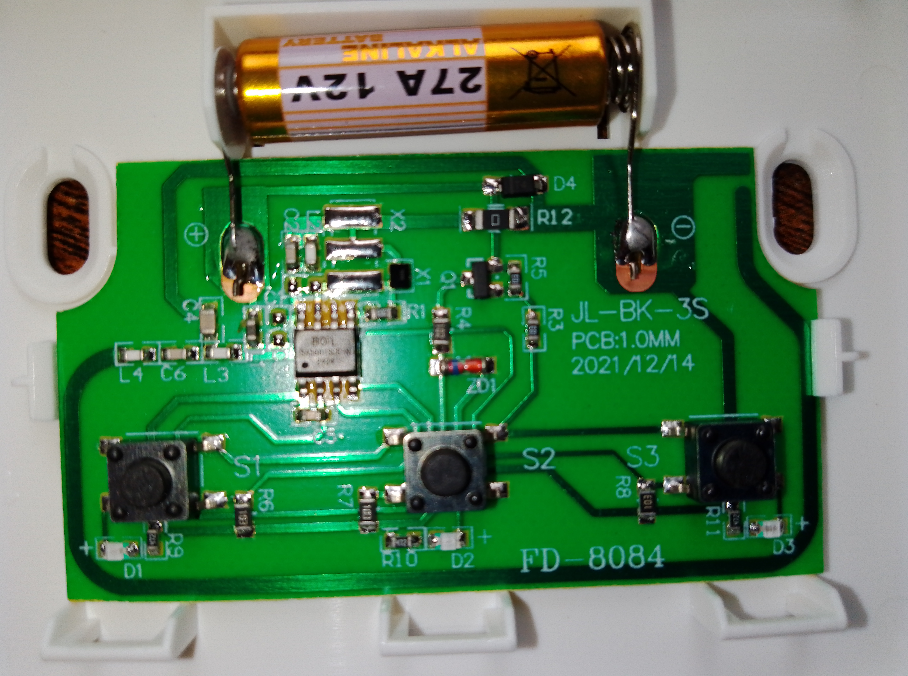
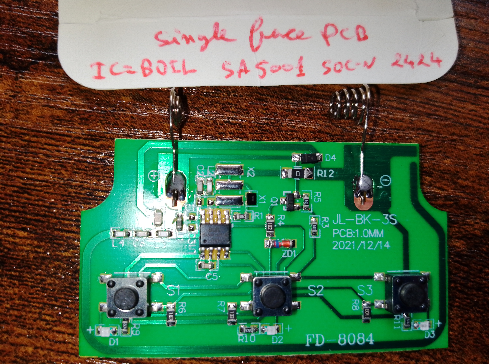

The transmitter


Electronic schematic of the transmitter
PCB

Electronic schematic, IC1=BOIL SA5001 SOC-N 2424
Even if the external box has only 2 buttons, the PCB is equipped with 3 symmetric buttons
Cost of the product (Aliexpress): 5.5 euros, Date: 02/12/2024
PCB
Electronic schematic, IC1=BOIL SA5001 SOC-N 2424
Even if the external box has only 2 buttons, the PCB is equipped with 3 symmetric buttons
PCB, Relay Y3F-105DM 16A 250VAC 280VDC, Linear voltage regulator AMS1117 3.3 DNST

Electronic schematic, IC1=BOIL SA5001 SOC-N 2424 , IC1 and IC2 No ref

Electronic schematic with function block